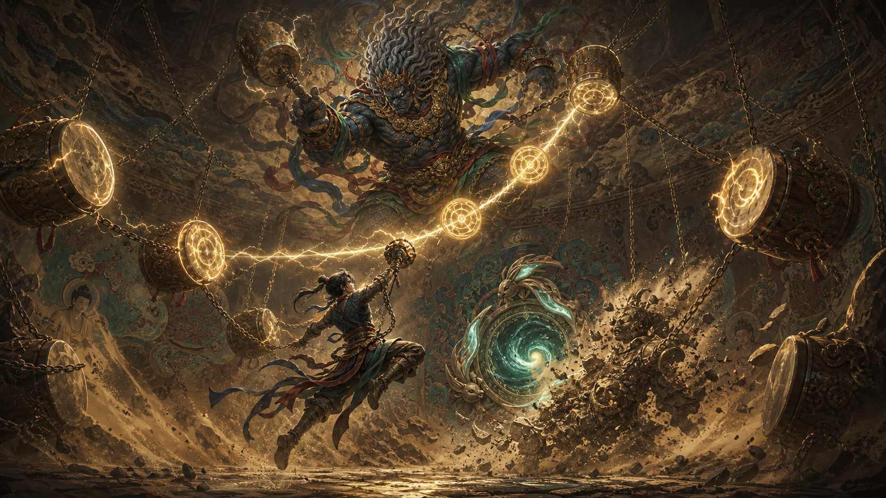
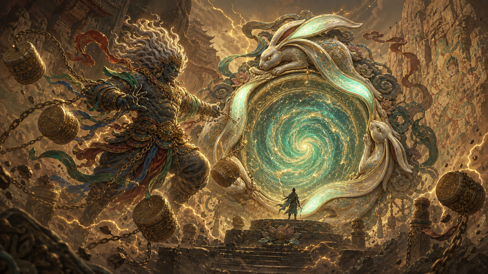

收：拿到有用的遗物
残卷、颜料、铜铃和兔耳印是主要战利品。拿得越多奖励越高，也越容易暴露位置。
简化后的核心
壁画、四神和三兔门都服务于一个清晰循环：进洞窟找好东西，打过中途遭遇， 在风沙收紧前找到撤离门。玩家不需要逐步解大型谜题，只需要围绕“多拿一点还是马上撤”做选择。
敦煌元素不只是装饰。雷鼓是开门倒计时，三兔是撤离标志，风雨雷电则变成小队里的四种简单职责。
一局三步
残卷、颜料、铜铃和兔耳印是主要战利品。拿得越多奖励越高，也越容易暴露位置。
战斗强调破盾、救队友和抢节奏，不做长时间血条消耗。打赢是为了继续搜或抢门。
带着兔耳印击响雷鼓，传送门短暂开启。全队需要守一小段时间，然后一起撤出。
四神小队分工
听风找宝点，标出最近撤离门，帮助小队绕开高风险路线。
找路 / 侦察 / 拉开距离净化寂沙、救起倒地队友，短时间修复破损壁画机关。
救援 / 恢复 / 稳住局面用雷链近身、击鼓破盾，负责抢门、打断敌人开门。
破盾 / 控场 / 抢节奏短暂照出敌队、陷阱和假门，让撤离决策更快更安全。
侦测 / 标记 / 防埋伏
雷神玩法定位
雷神作为风雨雷电四神之一，保留敦煌壁画中连鼓、锁链、飘带和震醒壁画的视觉气质。 玩法上他承担新手试炼：玩家学会击鼓充能、破盾、拉队友进撤离点。
三兔共耳撤离门
三兔共耳图形仍然保留“轮转、共听、通往记忆深处”的文化意象，但玩家只需要理解： 找到兔耳印，启动门鼓，守住传送门，全队撤离。
地图上有多个兔耳印，拿到后会提示最近的三兔门方向。
带印玩家敲响门鼓，传送门开始充能并暴露位置。
敌人会来抢门，小队需要分工防守、救援、标记。
门稳定后可全队撤离；贪更多战利品会增加失败风险。
多人配合
高风险玩家携带兔耳印，队友围绕他选择路线和战斗节奏。
风、电玩家负责提前发现撤离门、敌队和陷阱，减少无效绕路。
雷玩家启动门鼓，雨玩家修复门区，其他人控线防守。
看到寂沙逼近或敌队集结，就立刻撤；贪局有收益，也有代价。
剧情表达
第一次开门失败后触发雷神试炼，玩家学会雷鼓和撤离门规则。
每个赛季或章节恢复一位四神，让小队职责获得新工具。
高价值遗物会揭示壁画记忆，也会让下一局更危险。
当四神线索集齐，三兔门从撤离点变成通往终局洞窟的大门。
宣传概念图
